Like a rook moving confidently across ranks and files, I learned to lead people, build systems, and foster a stronger community at TĐN Chess Club.

Founded by students of Tran Dai Nghia High School for the Gifted, the TĐN Chess Club is a student-led community that connects young people through their shared passion for chess. Beyond organising tournaments and exchange events, the club aims to create a welcoming environment where members can develop their skills, build friendships, and inspire more students to discover the game.
Founded
2021
Members
70+
active each school year
Activities
- TĐN Chess League — Monthly internal tournaments
- TĐN Chess Open Championship — City-wide open tournaments
- TĐN Chess Solo Challenge — Inter-school friendly matches
- Training sessions, volunteer teaching and school fair activities
For five years, Tran Dai Nghia Chess Club has been much more than an extracurricular activity to me. Growing from Member to Head of Program, then President, and now Advisor, I have grown alongside the club itself.
The longer I stayed, the more I understood that a club is not defined by the tournaments it organises, but by the community it builds. With every tournament, event, and conversation with members, I came to understand what inspired students to stay, what experiences they valued most, and how every initiative should ultimately strengthen the community we were building together.
Looking back, my journey was never simply about taking on bigger roles. It was about taking on greater responsibility for a community that had shaped me for five years, and contributing to its growth in return.
See My Work Here
Head of Program
This was my first leadership role in TĐN Chess Club. As Head of Program, I was responsible for the full cycle of event planning and execution, from ideation to delivery, as the club did not have separate HR, logistics, or external relations teams.
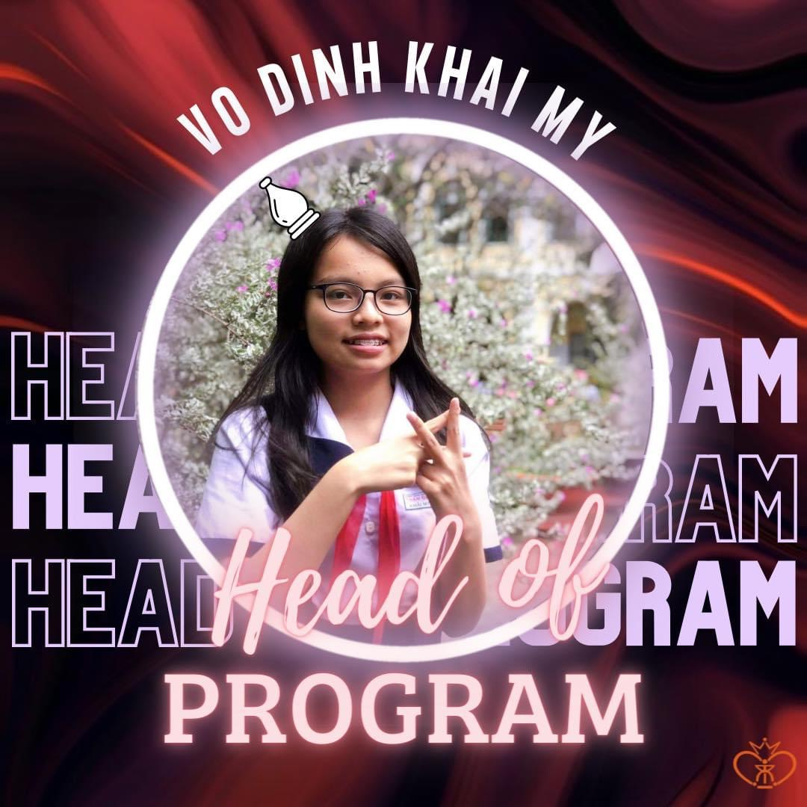
Key Events
TĐN Chess Open
City-wide Chess Tournament
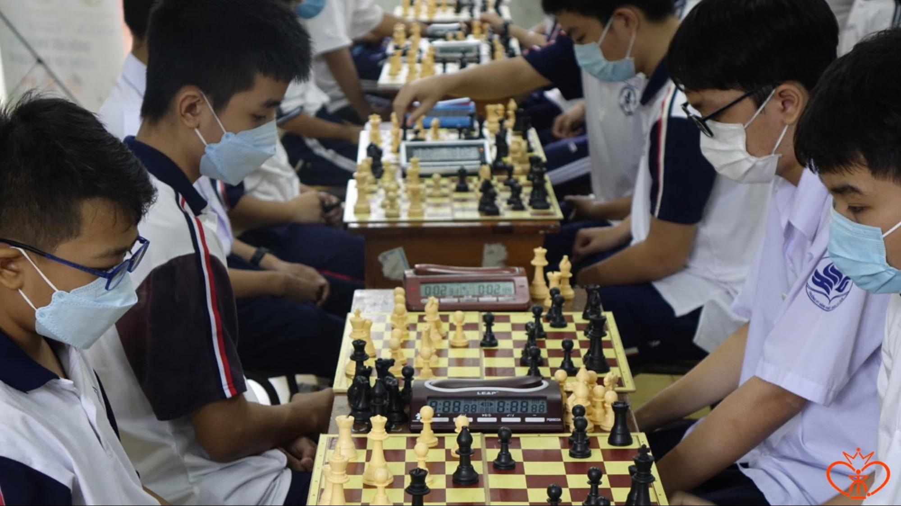
TĐN Chess Open is an annual city-level tournament organised by our club, providing a platform for students to compete, interact, learn from each other, and promoting chess participation among high school students.
My Role
- Developed the overall tournament plan and structure with the Board of Directors
- Led sponsorship outreach and secured support from American Study
- Managed logistics, including chess boards and clocks, medals, and venue setup
- Monitored timelines, tracked progress, and ensured all teams met deadlines
Outcome: Successfully organised with 50+ participants from multiple schools across the city.
TĐN Battlefield: United
National Inter-school Online Tournament
Inspired by the club's friendly match format, we developed a new nationwide inter-school tournament format, named TĐN Battlefield: United, bringing together schools from across Vietnam.
My Role
- Designed the competition structure, including a single-elimination format, online tournament operations and scheduling with the Board of Directors
- Led outreach to chess clubs across Vietnam and coordinated participation from 8 schools
- Coordinated livestream execution for semi-finals and finals with the PR Department, including setup and live match coverage
- Oversaw overall execution to ensure smooth delivery across all stages of the tournament

Outcome: 300+ reactions, 10K+ reach, 1K live viewers (final match), 3K views in total.
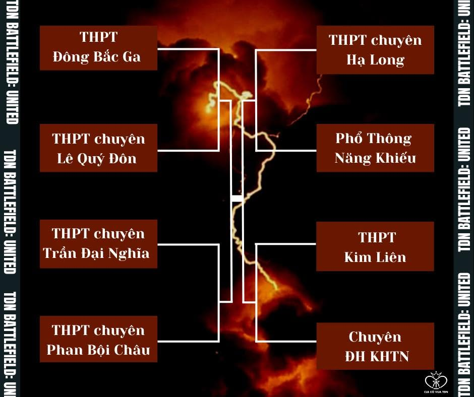
Leadership Challenge
Challenge: As a Grade 9 student in a team mainly composed of senior high school students, I often found myself questioning how I could effectively lead people who were older and more experienced than me, without any formal authority.
How I Built Trust as a Young Leader
- Consult: I regularly consulted the Board of Directors and senior members before making key decisions to ensure alignment and learn from their experience.
- Improve systems: I tried to improve internal processes by organising clearer workflows, identifying members' strengths and assigning tasks accordingly.
- Encourage discussion: I encouraged open discussion within the team so that everyone, regardless of age or experience, felt comfortable sharing their ideas and contributing to decisions.
President
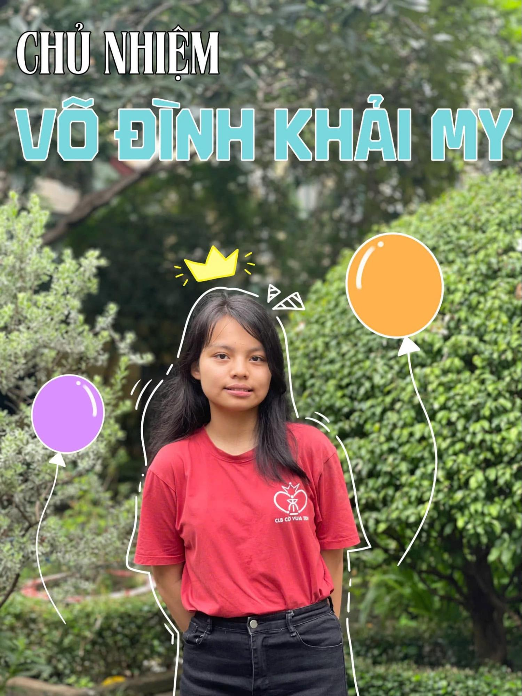
As President, I held overall responsibility for leading the club's direction, coordinating different departments, managing external relations with stakeholders, and shaping both competitive and community-based initiatives. When I first took on the role, the club had strong enthusiasm, but structure and consistency in operations needed improvement. Over the school year, I focused on transforming it into a more organised, inclusive, and impact-driven chess community.
How I Changed the Club
- Structured workflow: I introduced a master planning sheet for every event, including timelines, tasks, logistics, and risk management. This workflow was later adopted and continued by future generations of the club.
- Inclusive operations: I shifted the workflow from being Board of Directors-centred to a more shared model, encouraging members to participate and take more active roles.
- Stronger communication and branding: I worked with the PR Department to improve event communication with clear themes, visuals, and post planning to strengthen the club's presence.
Key Initiatives
TDN x KHTN Open Chess & Xiangqi Tournament 2025
Scale & Impact
- Co-organised with the University of Science Chess Club to create the largest event in club history — 250+ participants from across the city.
- The event was featured on HTV7 and several news outlets, highlighting its scale and community impact.
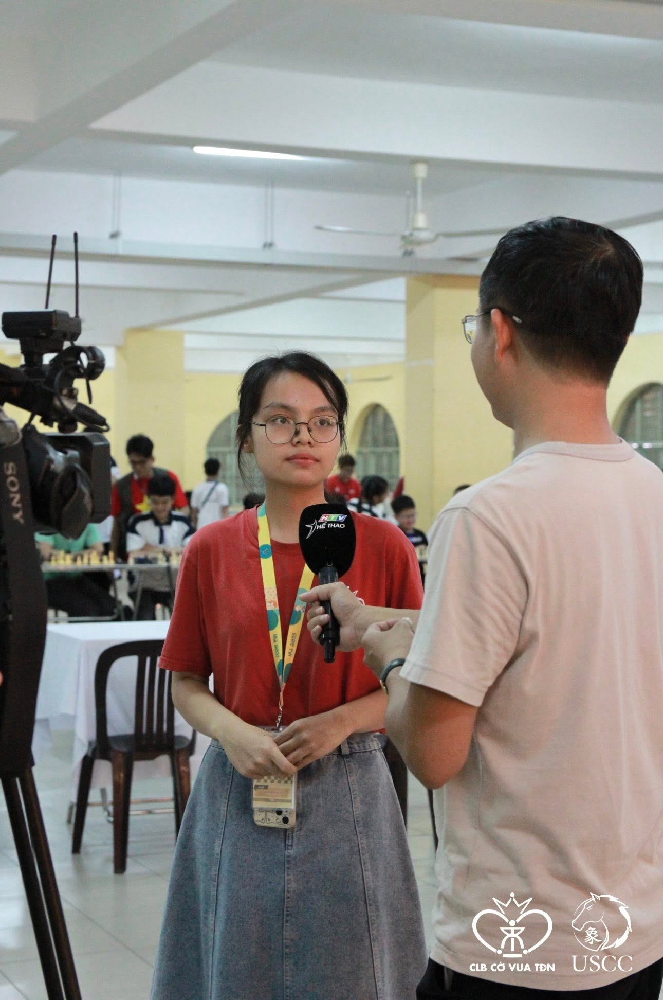
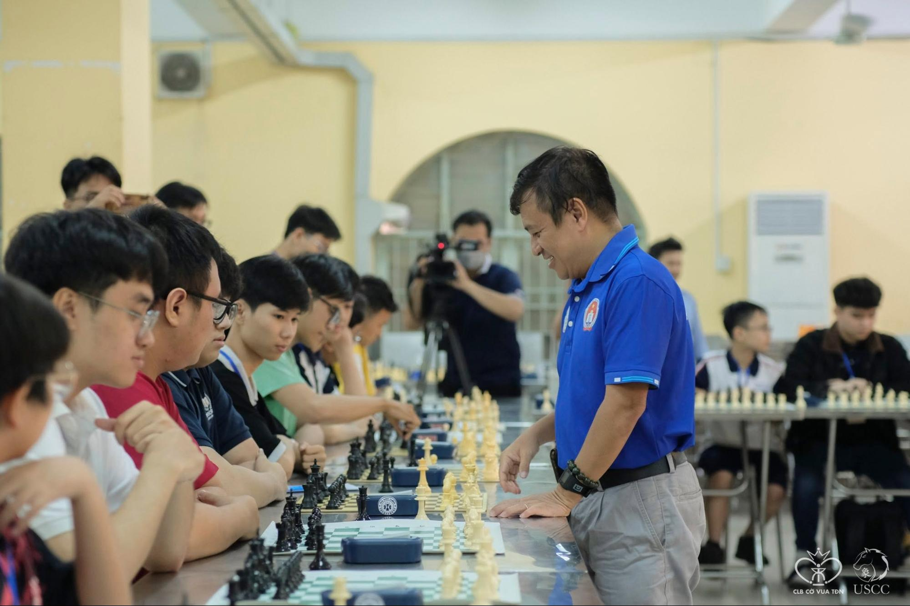
Improving the Tournament Experience
Noticing that most chess tournaments only focus on competition, with little space for learning or interaction, I suggested adding a sharing session with chess and xiangqi masters and grandmasters (Q&A and experience sharing), along with simultaneous exhibition games. This helped turn the event into a more open learning experience, not just a competition.
I also improved the tournament process to be more professional — a dedicated MC, player IDs, professional pairing software, and more carefully trained referees.
Team Leadership
As the scale increased, this was the first time our club handled a tournament this large, and many members were also busy with other commitments. Additionally, there were some disagreements about PR direction and entry fee during the preparation process due to the difference in working culture and mindset between two clubs — high school and university.
- Created a master plan to map out all tasks in advance and split the project into clear phases (sponsorship, communication, logistics, etc.)
- Partnered with the University club lead to co-manage the timeline and divide responsibilities clearly, keeping both teams aligned despite heavy academic workloads.
- Held a meeting with the Board of Directors from both clubs to openly discuss each side's perspective and reach a more balanced solution that both sides agreed on.
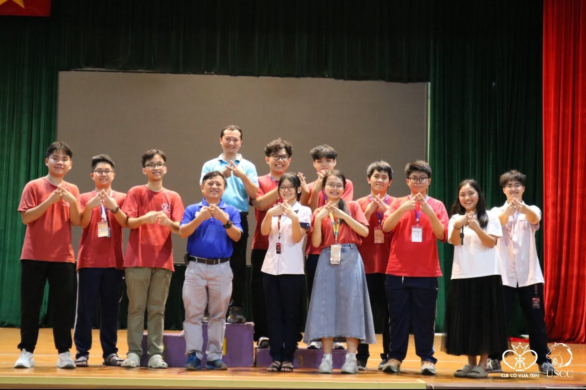
"There's no right or wrong way to work. There's only OUR way."
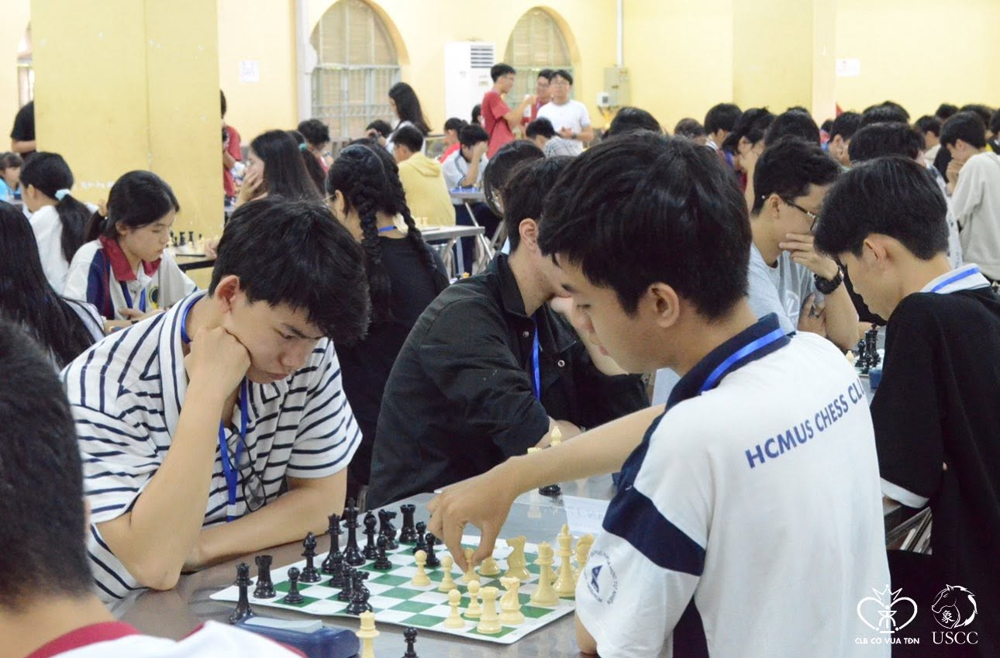
Attracting Participants
To grow the scale of the tournament, I worked with the PR Department to design and implement multiple outreach strategies:
- Posting in chess Facebook groups and online communities
- Sharing in private group chats and previous-year tournament groups
- Contacting school chess clubs and small chess centers by email
- Offering group discounts to encourage team participation
- Offline promotion within the school
- Collaborating with chess content creators by inviting them to join the tournament and promote it through their channels
Community Innovation
Beyond tournaments, I wanted to make chess more approachable and meaningful for students who might never join competitive events. These initiatives focused on connecting chess with everyday school life, creativity, and community.
EcoxChess Booth: Xe Xuân Xanh (Green Rookie)
Many people often see chess as just a recreational game with limited real-world impact, and environmental themes are rarely associated with it. I saw this gap as an opportunity to connect two seemingly unrelated ideas. Our club collaborated with the Environmental Club (ECO) to organise a booth during the school's Spring Festival, where we created chess sets from recycled materials and designed interactive activities around both chess and Tet-themed games. The aim was to combine gameplay with environmental awareness in a more engaging way.
My Role: I was responsible for shaping the concept direction, co-developing recycled chess sets, and coordinating the booth structure and activities during the event with Eco Club.
Result: The booth successfully attracted many students at the Fair and increased awareness of both chess and sustainability.
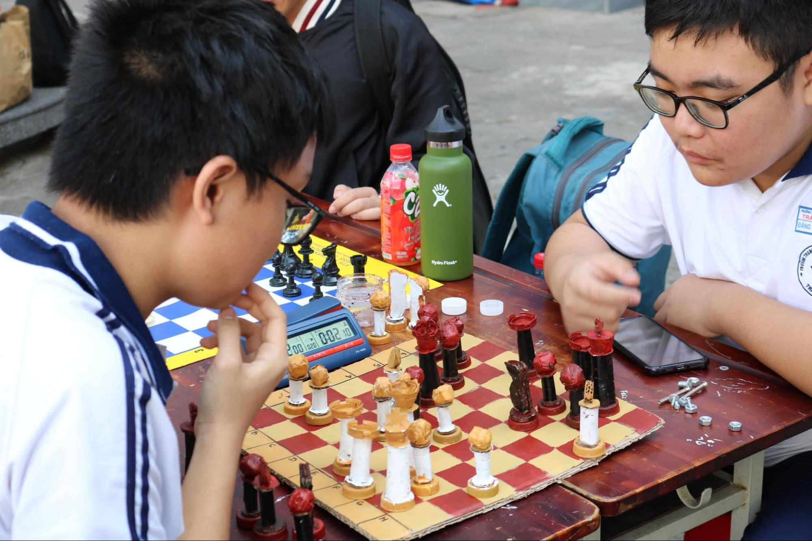
Little Grandmaster
In-school Chess Booth
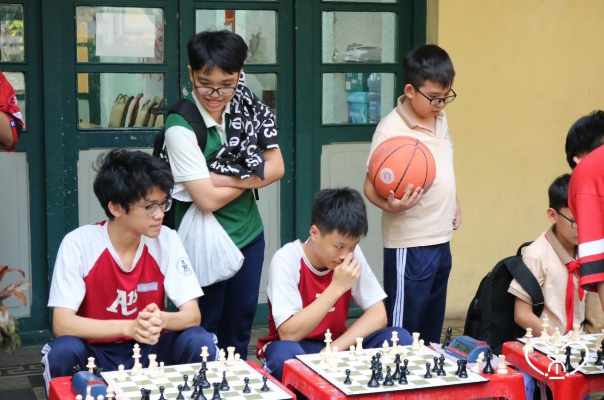
I noticed that many younger students (especially Grade 6–7) were interested in chess but did not have the time or environment to join formal competitions, which limited their opportunities to play and improve. To address this, we launched Little Grandmasters, a one-week in-school chess booth where students could play casual games with each other, interact with stronger players, and explore chess in a more accessible and enjoyable way. The booth also included mini-games such as chess puzzles and variant chess formats to keep engagement high.
My Role: I organised the overall activity framework, including casual play, puzzle stations, and mini-games, while coordinating staff to ensure smooth execution throughout the week.
Result: The booth created a consistent space for students to play chess during school hours, especially for younger students, and increased interaction between beginner and experienced players.
Social Campaigns
To make chess more relatable beyond competitions, we also developed storytelling-based campaigns focusing on the personal stories of chess players to connect audiences with the sport.
Valentine Campaign — "Castling of Souls": Sharing a light love story to show the emotional side of high school chess players beyond competition. Result: 2k+ reach, 170+ reactions.
"I Am" Campaign: Using chess pieces as metaphors to tell players' personal journeys through their connection with the game. Result: ~1K reach, ~100 reactions.
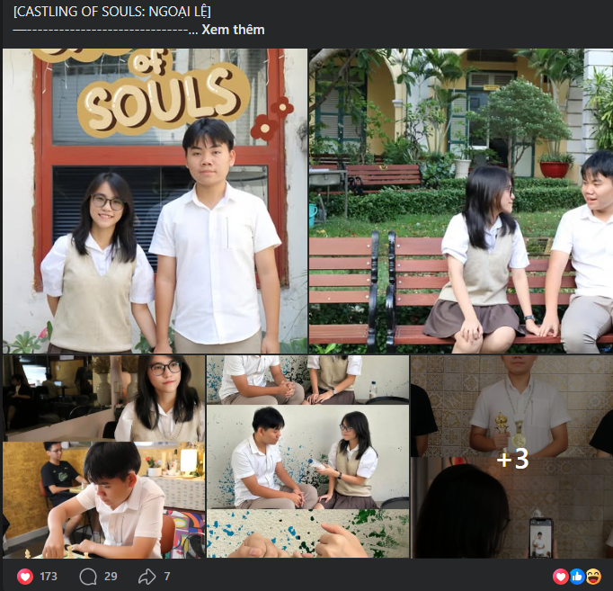
Social Impact
Chessing Is Caring
A one-month chess teaching program at a local shelter school
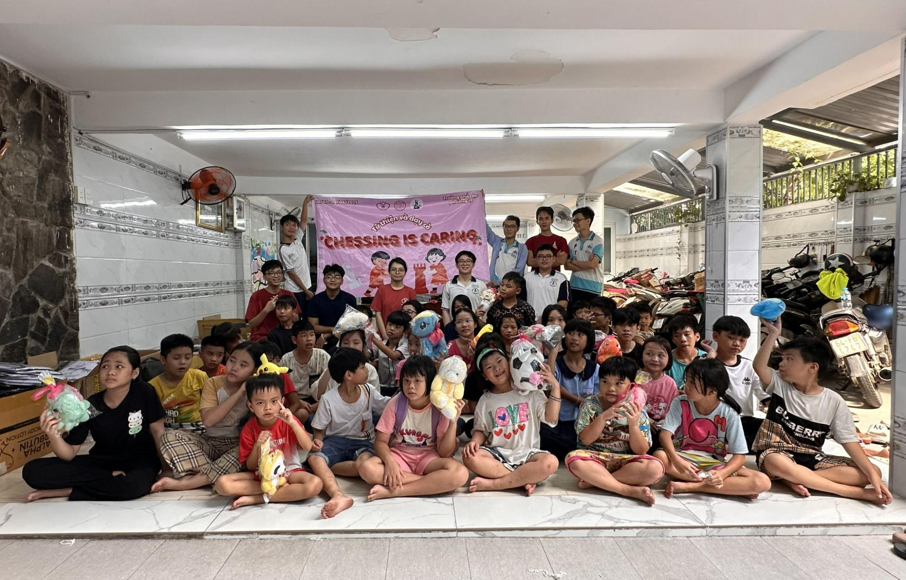
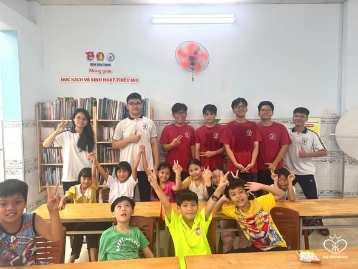
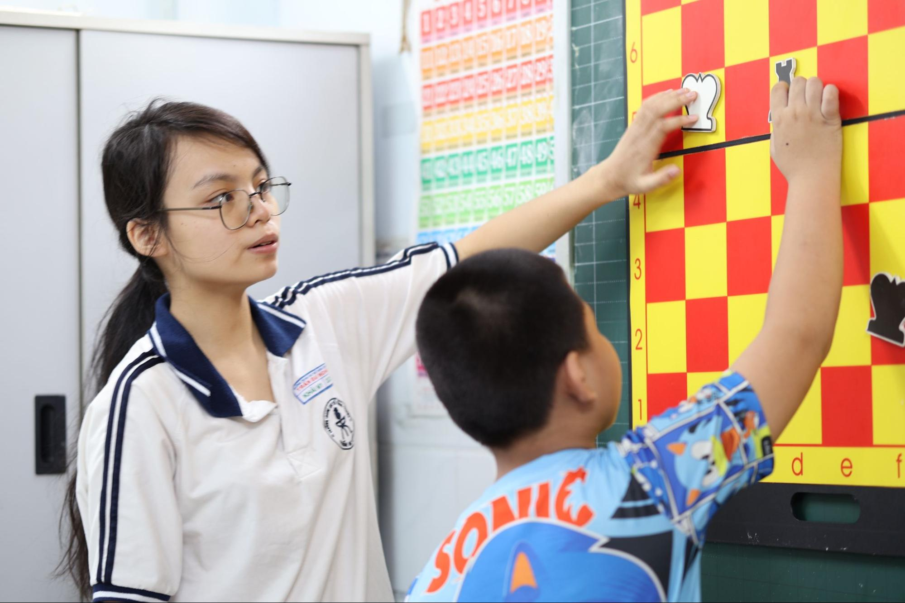
I believed that short-term charity activities, such as one-time visits and gift donations, were not enough to create a meaningful impact.
Therefore, I proposed a 1-month teaching program at a local shelter to help children understand the basics of chess through continuous learning. The program was organised in collaboration with Chess Nang Khieu Club and Help Heal Share Organization, where we also provided chess sets, learning materials, gifts, and clothing sponsored by a local fashion company.
My Role: I designed the program structure, including weekly lesson plans and teaching flow, and trained volunteers and supported teaching sessions throughout the program.
Result: 50+ children were introduced to basic chess concepts through consistent weekly sessions over one month, with active engagement from volunteers.
View Chong Chong Tre Project hereThrough leading tournaments, community projects, and a student organisation, I realised that leadership is not about organising more activities. It is about building systems that allow people to contribute, grow, and continue creating impact even after you leave.
Click each piece to discover its story.